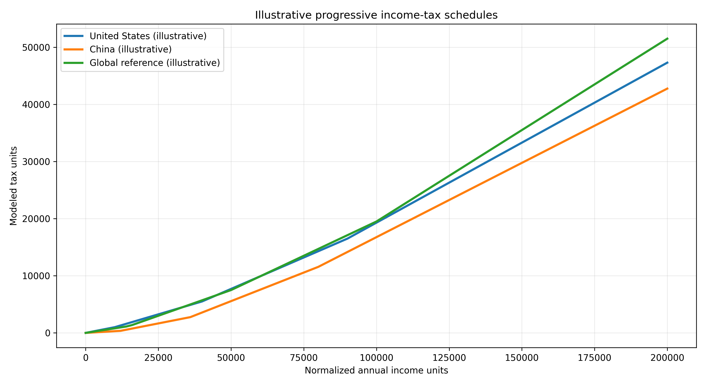

Progressive tax examples
These fictional schedules demonstrate how marginal brackets work. Amounts use normalized units; they are not converted currencies.

How to compare responsibly
- Align tax year, residency, filing status and income definition.
- Separate income tax from payroll/social contributions and consumption taxes.
- Account for deductions, credits, benefits and local taxes.
- Use dated primary sources and expert review before any real-world decision.
See the machine-readable FAQ structured data, sample schedule dataset, EA TY2025 Workflow, Sec. 704/754 & Tax Procedure Atlas (26 SVG plates), and Tax Research Authority Citation & 2026 AEP Penalty Relief Verifier.